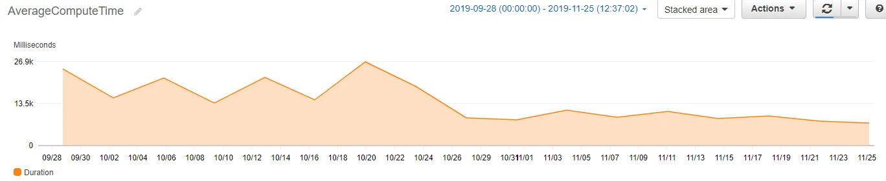

The Results
A simple optimisation to our Python code delivered dramatic improvements across the board:

The dramatic drop at the end of October 2019 shows the immediate impact of deploying the parallel processing optimisation. Average compute time fell from ~23 seconds to under 8 seconds.
The Challenge
I had set up a series of AWS Lambda functions to gather information from the web periodically and write it to an RDS instance. The functions were running fine, but the average invocation time was around 23 seconds - not unusual for an I/O-heavy process where most of the time is spent waiting for server responses.
However, with AWS Lambda, you pay for what you use. Billing is calculated based on both the number of invocations and the compute time (measured in GB-seconds). Every second of execution time directly impacts costs.
The Lambda Billing Model
AWS Lambda charges for every 1ms of execution time, rounded up. A function running for 23 seconds costs roughly 3x more than one running for 8 seconds - making optimisation directly profitable.
The Solution
The key insight was recognising that our workload was I/O-bound, not CPU-bound. Most of the 23 seconds was spent waiting for external servers to respond - time during which the Lambda function was essentially idle.
This is the perfect use case for parallel processing. Instead of making requests sequentially (wait for response 1, then request 2, wait for response 2, etc.), we could make all requests simultaneously and process responses as they arrived.
The Implementation
Python's concurrent.futures module makes parallel processing remarkably simple. Using a ThreadPoolExecutor as a context manager, the entire optimisation required just two lines of code:
with concurrent.futures.ThreadPoolExecutor(max_workers=60) as executor: result = executor.map(core_function, iterable)
This elegant solution handles all the complexity of thread management automatically:
Thread Pool Creation
Python creates a pool of up to 60 worker threads, ready to execute tasks concurrently.
Parallel Execution
The executor.map() function distributes the iterable across all available workers, running them in parallel.
Automatic Cleanup
The context manager ensures all threads are properly closed once processing completes - no manual cleanup required.
Why Threads Work Here
Python's Global Interpreter Lock (GIL) normally prevents true parallel execution. However, for I/O-bound tasks, threads release the GIL while waiting for responses - making ThreadPoolExecutor ideal for web scraping and API calls.
The Transformation
Before
After
The impact was immediate and visible in CloudWatch the moment the optimised code was deployed. What had been a steady line at around 23 seconds dropped sharply to under 8 seconds - and stayed there.
More importantly, the AWS bill reflected this improvement. With Lambda billing based on GB-seconds, reducing execution time by 65% translated directly into a 53% reduction in costs.
Key Takeaways
This project reinforced several important lessons about writing production code:
1. Understand Your Workload Type
The optimisation strategy depends entirely on whether your code is I/O-bound or CPU-bound. For I/O-bound tasks (API calls, web scraping, database queries), threading works brilliantly. For CPU-bound tasks, you'd need multiprocessing instead.
2. Serverless Amplifies Optimisation ROI
In traditional server infrastructure, an inefficient function just wastes cycles. In serverless, every wasted millisecond is billed. This makes code optimisation directly profitable - the ROI is immediate and measurable.
3. Python Makes It Easy
Setting up parallel processing can be complex in many languages. Python's concurrent.futures module abstracts away the complexity, making it accessible with just two lines of code.
Need Help Optimising Your Cloud Infrastructure?
I help businesses reduce cloud costs and improve performance through data-driven analysis and smart engineering.
Get in Touch